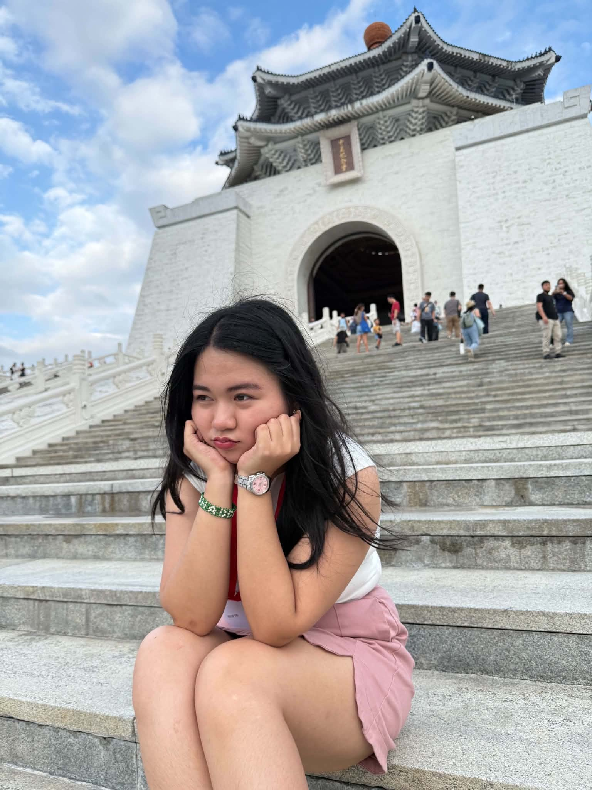
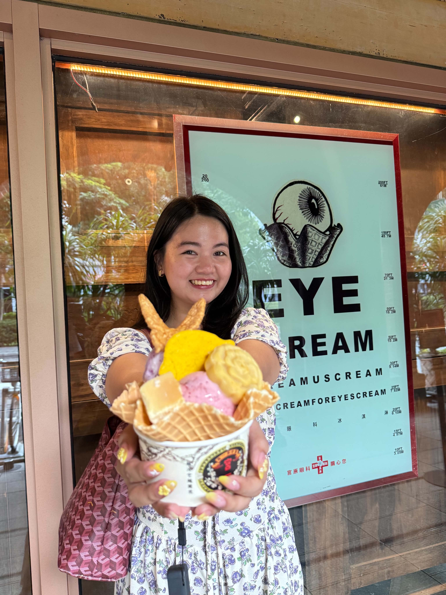
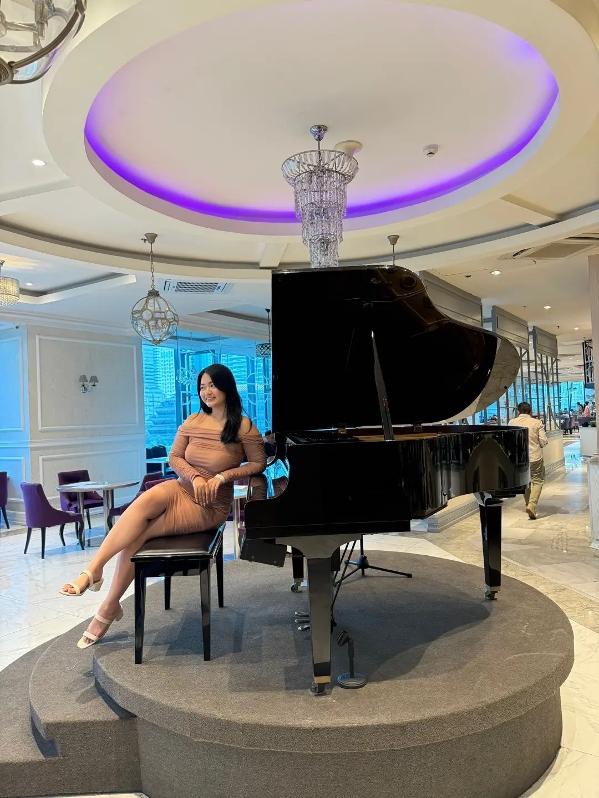

SORRY, BABI
hi, babi ko.
this is what i’ve been working on, kaya nga sabi ko sayo nagco-code ako hehe. sorry rin po for keeping you up this late, gusto ko lang sana ma-send sayo before ka mag-sleep since kanina ko pa rin naman siya ginagawa hehe
i hope u forgive me na
A LITTLE LETTER FOR YOU
hi, baby.
i’m really sorry, baby ko :<
hi, babi. i wanna apologize lang for falling asleep :< and for not being able to suyuin you. i hope you can see po na i'm trying din. i just want to feel lang din po na you're willing to put your pride aside somehow, even if it's hard, especially kapag may misunderstanding tayo or may isa satin na may mali. kasi i would do the same for you naman, babi, kasi i love you.
i was hurt lang po kaya hindi muna kita kinausap, kasi it felt like you were making it seem na parang ang laki-laki ng kasalanan ko, when i didn't mean to hurt you naman :< i don't want us to feel like we have to choose between our pride and fixing things. i want us to meet halfway, listen to each other, and make an effort kahit mahirap minsan, kasi ganun din naman ang gagawin ko for you. i don't wanna lose you.
i'm really sorry po ulit sa nangyari, kasi po nakasleep ako, and sa hindi ko agad pagsuyo or lambing sayo. i know i could've handled things better, and i'll try to communicate instead of keeping things to myself. i hope po you can also do the same. thank you for being patient with me, babi. i love you po, i'll do better po, promise. i'm really sorry ulit.
A LITTLE COLLECTION OF YOU
fave pics ko from you.
nakaka-heart attack tong part na to kasi ganda mo huehue ^^



ito ba yung nagiging video editor pag inlove? JAHJAHSJHSA
VIRTUAL HUG MUNA
i’ll hug u din irl hehe soon.
thank you so much for loving me, baby. kahit po may times na grabe yung away natin, sana piliin pa rin nating ayusin and intindihin isa't-isa. i love you so much po, and i'll do better for you, promise. miss na miss na kita, babi ko :((
bubu and dudu yan oh. us yan hehe ♡
i love you so much ♡